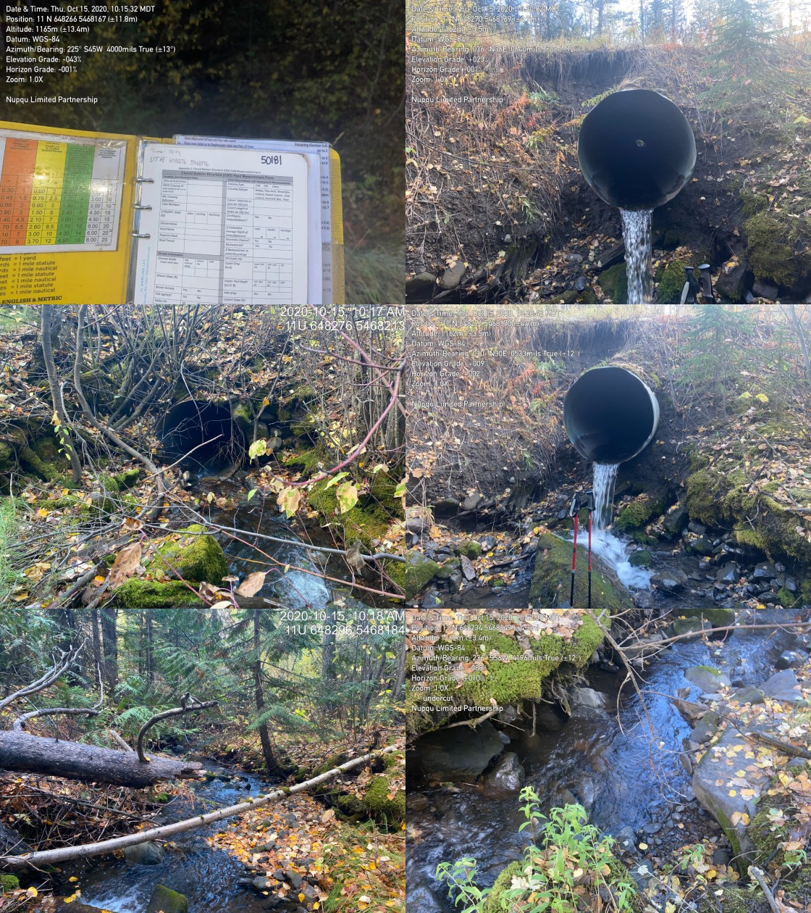

Appendix - Crossing 50181
Lodgepole FSR - Tributary to Morrissey Creek
Site Location
Crossing 50181 is located on a tributary to Morrissey Creek, approximately 200m upstream from the confluence with a tributary to Morrissey Creek. The crossing is located on Lodgepole FSR just south of Morrissey approximately 15km south of Fernie. Lodgepole FSR is a gravel forest tenure road with active log hauling at the time of the survey. This crossing is on a stream that flows into the Morrissey Creek tributary approximately 2.7km upstream of where PSCIS crossing 50185 on River Road was also surveyed with a habitat confirmation assessment (Appendix - Crossing 50185).
Background
At the crossing location, the stream is third order with a watershed area upstream of the road of approximately 3.4 km2. The elevation of the watershed ranges from a maximum of 2100 to 1200m at the culvert. Upstream of the crossing, although there are four fords documented in PSCIS there are no other road-stream crossing barriers. No fisheries information was available for the stream (MoE 2020d) however westslope cutthroat trout, bull trout, mountain whitefish, brook trout, longnose sucker and longnose dace have been recorded downstream in Morrissey Creek (MoE 2020b). Elk River Alliance (2020b) conducted redd surveys in Morrissey Creek in 2019 with a total of 7 redds observed within a 3.6km of stream surveyed.
PSCIS stream crossing 50181 was ranked as a high priority for follow up with habitat confirmation due to the relatively large channel width (3.7m) and the previously rated high value habitat reported in PSCIS from Grainger (2011). The habitat confirmation was completed on October 15, 2020. A map of the watershed including areas surveyed is provided in Attachment 1 – Map 082G.108.
Stream Characteristics at Crossing
At the time of the survey, the un-embedded and non-backwatered 1.2m diameter crossing was considered a barrier to upstream fish passage with a pipe length of 30m, a culvert slope of 7%, a stream width ratio of 2.2 and an outlet drop of 0.95m (Table 5.9). Water temperature was 4\(^\circ\)C, pH was 8.4 and conductivity was 292uS/cm.
Stream Characteristics Downstream
The stream was surveyed downstream from the culvert for 200m to the confluence with the downstream channel. The mouth of the stream is located approximately 100m east of where it is mapped on the freshwater atlas stream layer. Overall, total cover amount was rated as moderate with large woody debris dominant. Cover was also present as small woody debris, boulders, undercut banks, deep pools, and overhanging vegetation (Table 5.10, Figure 5.9). The average channel width was 4m, the average wetted width was 2.2m and the average gradient was 8%. The dominant substrate was boulders with cobbles subdominant. Intermittent smaller pools and pockets of gravels suitably sized for resident salmonid spawning were present. Habitat was rated as medium value for fry/juvenile salmonid rearing.
Stream Characteristics Upstream
The stream was surveyed upstream from the culvert for 515m. Overall, total cover amount was rated as moderate with boulders dominant. Cover was also present as small woody debris, large woody debris, undercut banks, and overhanging vegetation (Table 5.10, Figure 5.10). The average channel width was 2.9m, the average wetted width was 2.2m and the average gradient was 12.4%. The dominant substrate was cobbles with boulders subdominant. Good flows were present and some pockets of gravels suitable for spawning were observed throughout. There were steps ranging from 0.5 - 0.8m due to large woody debris jams but no permanent migration barriers were observed until a cascade at the top end of the survey area (24% for >50m). Habitat was rated as medium value for fry and juvenile westslope cutthrout trout rearing.
Fish Sampling
To confirm fish presence and assess potential impacts of the culvert on fish densities in the stream, electrofishing was conducted upstream and downstream of the crossing. One site was sampled downstream and one site was sampled upstream. A total of 6 westslope cutthrout trout were captured upstream and 15 were captured downstream (Figure 5.11). Raw results are included in digital format as Attachment 2 and summarized in Tables 5.11 - 5.12 and Figure 5.8.
Structure Remediation and Cost Estimate
Structure replacement with an open bottomed structure is recommended to provide access to the habitat located upstream of PSCIS crossing 50181. The cost of the work is estimated at $125000 for a cost benefit of $4100/linear m and $5400/m2.
Conclusion
There is an estimated 0.5km of mainstem habitat upstream of crossing 50181 with habitat in the areas surveyed upstream of the crossing rated as medium value for fry and juvenile salmonid rearing. Density of westslope cutthrout trout parr was higher in the site sampled downstream of the crossing when compared to the upstream site with fry, juvenile and adult fish captured downstren only. The Lodgepole FSR is under tenure of the Ministry of Forests, Lands, Natural Resource Operations & Rural Development. The crossing was ranked as a high priority for proceeding to design for replacement with an open bottomed structure and consideration of remediation of PSCIS 50185 (Appendix - Crossing 50185) should be considered at the same time for maximum potential benefits.
| Location and Stream Data |
|
Crossing Characteristics | – |
|---|---|---|---|
| Date | 2020-10-15 | Crossing Sub Type | Round Culvert |
| PSCIS ID | 50181 | Diameter (m) | 1.2 |
| External ID | NA | Length (m) | 30 |
| Crew | MF, AI | Embedded | No |
| UTM Zone | 11 | Depth Embedded (m) | NA |
| Easting | 648276 | Resemble Channel | No |
| Northing | 5468176 | Backwatered | No |
| Stream | Tributary to Morrissey Creek | Percent Backwatered | NA |
| Road | Lodgepole FSR | Fill Depth (m) | 3 |
| Road Tenure | NA | Outlet Drop (m) | 0.95 |
| Channel Width (m) | 2.6 | Outlet Pool Depth (m) | 0.18 |
| Stream Slope (%) | 7 | Inlet Drop | No |
| Beaver Activity | No | Slope (%) | 7 |
| Habitat Value | Medium | Valley Fill | Deep Fill |
| Photos: From top left clockwise: Road/Site Card, Barrel, Outlet, Downstream, Upstream, Inlet. |
| Location | Length Surveyed (m) | Channel Width (m) | Wetted Width (m) | Pool Depth (m) | Gradient (%) | Total Cover | Habitat Value |
|---|---|---|---|---|---|---|---|
| Upstream | 515 | 2.9 | 2.2 | 0.3 | 12.4 | moderate | medium |
| Downstream | 200 | 4.0 | 2.2 | 0.3 | 8.0 | moderate | medium |
| Site | Location | Width (m) | Length (m) | Area (m2) | Effort (s) | Effort (s/m2) |
|---|---|---|---|---|---|---|
| 47 | Downstream | 2.2 | 150 | 330 | 840 | 2.5 |
| 46 | Upstream | 2.2 | 130 | 286 | 651 | 2.3 |
| Site | Location | Fry | Parr | Juvenile |
|---|---|---|---|---|
| 47 | Downstream | 0.6 | 3.3 | 0.6 |
| 46 | Upstream |
|
2.1 |
|
Figure 5.8: Fish densities (fish/100m2) for PSCIS crossing 50181.
Figure 5.9: Typical habitat downstream of PSCIS crossing 50181.
Figure 5.10: Typical habitat upstream of PSCIS crossing 50181.
Figure 5.11: Westslope cutthrout trout captured upstream of PSCIS crossing 50181.